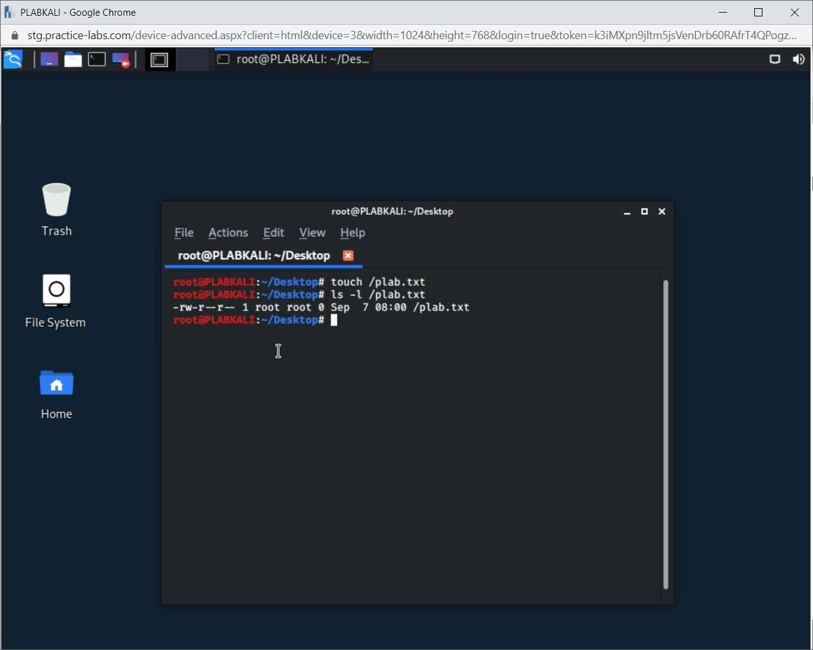
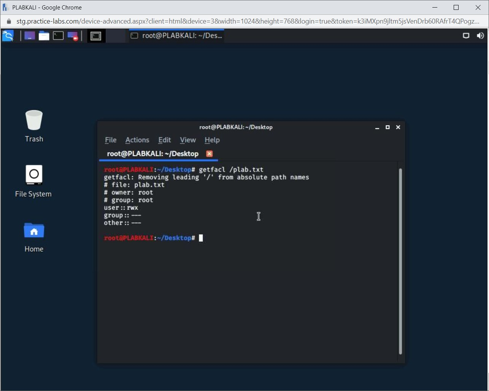

Introduction
bb1840e4-5425-49a3-9d75-477b8f016ff8
Welcome to the Implementing Secure Network Solutions Practice Lab. In this module, you will be provided with the instructions and devices needed to develop your hands-on skills.
dc640c20-9434-45ea-b7c2-6d4d6a196bfc
Learning Outcomes
In this module, you will complete the following exercises:
- Exercise 1 - Load Balancing
- Exercise 2 - Network Segmentation
- Exercise 3 - Virtual Private Network (VPN)
- Exercise 4 - Port Security
- Exercise 5 - Network Appliances and Services
After completing this module, you should be able to:
- Perform Media Access Control (MAC) Filtering
- Implement Access Control Lists (ACLs)
After completing this module, you should have further knowledge of:
- Active/Active and Active/Passive
- Scheduling
- Virtual IP and Persistence
- Virtual Local Area Network (VLAN)
- Intranet and Extranet
- Demilitarized Zone (DMZ)
- East-West Traffic
- Zero Trust
- Always On
- Split Tunnel vs. Full Tunnel
- Remote Access vs. Site-to-site
- IPSec
- Secure Sockets Layer (SSL)/Transport Layer Security (TLS)
- HTML5
- Layer 2 Tunneling Protocol (L2TP)
- Broadcast Storm Prevention / Loop Prevention
- Bridge Protocol Data Unit (BPDU) Guard
- Dynamic Host Configuration Protocol (DHCP) Snooping
- Jump Servers and Proxy Servers
- Network-based Intrusion Detection System (NIDS)/Network-Based Intrusion Prevention System (NIPS)
- Hardware Security Module (HSM)
- Firewalls
- Route Security
- Quality of Service (QoS)
- Implications of IPv6
- Port Spanning/Port Mirroring
- Monitoring Services
- File Integrity Monitors
- DNS
- Network Access Control (NAC)
- Out-of-band Management
Exam Objectives
The following exam objectives are covered in this lab:
3.3 Given a scenario, implement secure network designs.
- Load Balancing
- Network Segmentation
- Virtual Private Network (VPN)
- DNS
- Network Access Control (NAC)
- Out-of-band Management
- Port Security
- Network Appliances
- Access Control List (ACL)
- Route Security
- Quality of Service (QoS)
- Implications of IPv6
- Port Spanning/Port Mirroring
- Monitoring Services
- File Integrity Monitors
Note: Our main
focus is to cover the practical, hands-on aspects of the exam
objectives. We recommend referring to course material or a search engine
to research theoretical topics in more detail.
Lab Duration
It will take approximately 1 hour to complete this lab.
c6fa62a3-1a00-4052-8104-258e8cbaa187
Help and Support
For more information on using Practice Labs, please see our Help and Support page. You can also raise a technical support ticket from this page.
Click Next to view the Lab topology used in this module.
d2c53300-f951-45a9-9aa4-3d4ecae69e11
Lab Topology
During your session, you will have access to the following lab configuration.

Depending on the exercises, you may or may not use all
of the devices, but they are shown here in the layout to get an overall
understanding of the topology of the lab.
- PLABDC01 - Windows Server 2019 (Domain Controller)
- PLABDM01 - Windows Server 2019 (Domain Member Server)
- PLABWIN10 - Windows 10 (Domain Member Workstation)
- PLABKALI - Kali 2019.4 (Stand-alone device)
Click Next to proceed to the first exercise.
<
Home |
README >
CompTIA Security+ Practice Labs
Exercise 1 - Load Balancing
Consider a scenario in which you are attempting to
access a Web application on your internal network. The response time is
slow. Based on your request, when the administrator investigates this
issue, he finds that the server does not have optimal resources. For the
administrator, it is not possible to add more resources to the server.
There are two options: either you migrate the
application to another server or add an additional server to share the
workload. The latter solution is recommended. You can configure load
balancing between both the servers so that when a request comes in, the
load balancer decides which server the request can be sent to.
When a load balancer is used, the users no longer
directly connect with the servers. They connect with the load balancer
between the users and the servers. When requests are received, it sends
the request to the appropriate server based on the load being shared
between the servers. With the load balancer, no server gets overwhelmed
with requests. There is an equal distribution of requests between the
server by the load balancer.
Load balancers can either be hardware or
software-based. Hardware-based load balancers are dedicated devices that
serve only the purpose of load balancing between servers.
Software-based load balancers are applications that run on an operating
system.
In this exercise, you will learn about load balancing and load balancers.
Learning Outcomes
After completing this exercise, you should have further knowledge of:
- Active/Active
- Active/Passive
- Scheduling
- Virtual IP
- Persistence
Your Devices
This exercise contains supporting materials for Security+.

Active/Active
A load balancer can be configured in different ways.
In the Active/Active configuration, there are two or more load balancers
that work together. All the load balancers are configured to serve the
requests that are received. When a user sends a request to a Webserver
with an active/active load balancer in front, one of the load balancers
receives the request from the Webserver and responds to the user. If the
user re-visits the same Webpage, the load balancer, which served the
previous request, does not go back to the Webserver but retrieves the
same Webpage from the cache. Using this method, there is less impact on
network bandwidth.
However, if the same load balancer handling the
requests goes down, the user’s request for the same Webpage is no longer
available, and the user may receive an error. The load balancer may go
down due to a hardware or software failure. For example, if there is a
service failure, the load balancer may not be able to handle requests
for the Web server. In this case, the users are likely to get errors
rather than responses to their requests.
Active/Passive
In an Active/Passive configuration, one load balancer
handles all the requests, and the second one is the standby node. The
primary load balancer handles the requests and distributes them to the
servers running in the backend. The entire load is handled on the load
balancer. The passive load balancer is in monitoring mode. It monitors
the primary load balancer. If there is an issue with the primary load
balancer’s performance or a failure, then the passive load balancer
immediately takes over without any downtime.
One of the key advantages of the Active/Passive load
balancer configuration is that there is no downtime as the passive load
balancer continuously monitors the Active load balancer.
Scheduling
Load balancers use different types of scheduling methods, which are:
- Affinity: This method distributes the load to
servers depending on their capacity to handle requests. This process of
distributing the load is known as affinity scheduling, which can also be
based on the number of connections a load balancer has. For example,
the load balancer with a minimum number of connections may get the next
request.
- Round-robin: With a round-robin, the requests
are cyclically distributed to the servers. For example, let’s assume
that there are three Web servers configured with the load balancer. When
the first request comes, the load balancer sends it to the first
server. Then, the second request is sent to the second server. In the
same manner, the third request is sent to the third server. When the
fourth request is received, it will be sent to the first server.
Virtual IP
When the servers are configured with a load balancer,
you do not need to connect to it individually. There would be one
virtual IP assigned to the load balancer and one name, and the users can
use either one. The virtual IP is the IP address assigned to the load
balancer configuration that the users will connect to. It is like a
normal IP address except that it is assigned to the load balancer
configuration, unlike being assigned to a physical network adapter. For
example, you have two Web servers that are connected to the load
balancer. The following IP addresses are assigned:
Web server 1: 192.168.0.5
Web server 2: 192.168.0.6
The virtual IP that is assigned to the load balancer
configuration can be 192.168.0.100. The users no longer connect to
192.168.0.5 or 192.168.0.6. They connect to the virtual IP, which is
192.168.0.100. The load balancer can then automatically route the
requests to the appropriate Web server.
The load balancer then directs the requests to the appropriate available server.
Persistence
A load balancer can also provide session persistence.
When a client sends a request, the load balancer can assign an attribute
to the user, which could be a cookie or track the user’s IP address.
The load balancer creates a session stickiness or session persistence
between the user and the server. During the entire session, the load
balancer then starts sending the user requests to one specific server
rather than distributing it to different servers.
7429868b-128c-4069-95a9-7246a6a9e5a3
<
Home |
README >
CompTIA Security+ Practice Labs
Exercise 2 - Network Segmentation
Networks tend to grow large and become difficult to
manage. There are several reasons that the network should be broken into
pieces known as segments. Once the network is broken into segments, not
only will it increase the manageability, but will also increase the
performance by reducing broadcast traffic of the smaller network
sections
In this exercise, you will learn about various terminologies related to network segmentation.
Learning Outcomes
After completing this exercise, you should have further knowledge of:
- Virtual Local Area Network (VLAN)
- Intranet
- Extranet
- Demilitarized Zone (DMZ)
- East-West Traffic
- Zero Trust
Your Devices
This exercise contains supporting materials for Security+.

Virtual Local Area Network (VLAN)
Virtual LANs can divide a network into multiple
broadcast domains without the use of routers. When you divide a larger
network into smaller sections or broadcast domains, it increases the
manageability. It is also possible to apply restrictions on these
smaller sections. For example, you can block the traffic from one VLAN
to another. If the network is compromised, the attack can be isolated
using these segments
Another great advantage of VLAN is that you can reduce
direct communication between the systems. When the systems are placed
in different VLANs, communication is needed between these devices, the
traffic has to pass through the gateway of the VLAN, which ensures that
the network traffic is inspected.
Intranet
The Intranet is the internal network of an
organization. Intranet is available only to the employees of an
organization in most cases. However, some organizations may allow
visiting vendors and contractors to connect to their Intranet. The key
purpose of the Intranet is to share resources, such as files and
folders. You can also have an internal Web application that serves a
specific business goal.
For example, you may have an internally developed
Enterprise Resource Planning (ERP) application where the employees mark
their attendance, create and manage projects, and also have their
profile, which is then linked to the HR database.
Extranet
In this network topology, an organization makes
resources available through the internet, such as a web server, without
giving access to the organization's internal network. The other
organization can be a vendor or partner to the organization. It could
also be a client which would need access to specific resources, for
example, placing orders through a purchasing application
Demilitarized Zone (DMZ)
A network typically has endpoints, servers, and
network devices. The servers are mostly Internet-facing and provide
access to external users, such as clients and vendors. When you need to
secure the endpoints, if any server gets compromised, you need to
segregate the endpoints and the servers.
A DMZ is a logically separated network from the
internal network. It contains servers that need to be accessible
externally through the internet. For example, Web or messaging servers
that need to be externally accessible. The other servers of the network
can be placed on the internal network and do not need to be accessible
externally; for example, a database server
The DMZ network is Internet-facing, but network
communication between the internal and the DMZ needs to be encrypted.
The network traffic flowing between the DMZ and the internal network is
controlled with firewalls between both networks.
For example, you have a Web application that has a
database as a backend. You want to ensure that the database should be
secured even if someone compromises the Webserver. In such a scenario,
the database server should remain on the internal network so that if the
Web server, which is in the DMZ network, is compromised, the database
server is still secure.
East-West Traffic
Datacenters contain several different types of devices
that need to communicate with each other, for example, physical and
virtual servers, containers, and micro-services architecture. The
communication and the traffic flowing from one container to another or
from one virtual machine to another is known as East-West traffic.
Data centers are equipped with several security
appliances and applications to protect the perimeter network. For
example, the data centers may consist of firewalls and next-generation
firewalls that can be used to protect the network perimeter from attacks
like, Denial of Service (DoS) or Distributed Denial of Service attacks
(DDoS). The internet-facing applications can be protected with a Web
Application Firewall (WAF). However, all this traffic is vertically
flowing traffic and is considered to be North-South traffic.
However, with the use of containers, micro-services,
and virtual machines, there is a continuous increase in East-West
traffic, which is prone to insider attacks. It could be an intentional
insider attack, or it could simply be unintentional. For example, a user
connects his laptop, which is malware-infected, to the local network.
The malware will likely propagate itself to the internal network and,
therefore, infect the systems. There need to be security controls that
not only protect the internal systems’ traffic but also monitor it. You
can have antimalware and Data Loss Prevention (DLP) or even an Intrusion
Prevention System (IPS) in place to monitor the systems and East-West
traffic.
Figure 2.1 Screenshot of East-West Traffic: Showing the example of East-West traffic in two different datacenters.
Zero Trust
The Zero trust concept in networking is based on the
methodology that all requests received from any device on the network,
regardless if it is internally or externally located, must always be
authenticated and authorized. A no trust policy and always authorize and
authenticate needs to be implemented to ensure the security of devices
and data. A further security implementation will be the segmentation of
the network, ensuring the prevention of lateral movement.
7429868b-128c-4069-95a9-7246a6a9e5a3
<
Home |
README >
CompTIA Security+ Practice Labs
Exercise 3 - Virtual Private Network (VPN)
A VPN allows a user to connect to a specific network,
such as your organization’s network, using an unsecured external network
on the internet. A VPN server allows roaming users to connect to the
organization’s internal network. When a user uses an unsecured network
to connect to the organization’s network, an encrypted channel is
created, securing the data during transmission.
In this exercise, you will learn about VPN and the different types.
Learning Outcomes
After completing this exercise, you should have further knowledge of:
- Always On
- Split Tunnel vs. Full Tunnel
- Remote Access vs. Site-to-site
- IPSec
- Secure Sockets Layer (SSL)/Transport Layer Security (TLS)
- HTML5
- Layer 2 Tunneling Protocol (L2TP)
Your Devices
This exercise contains supporting materials for Security+.

Always On
A VPN allows the user to always stay connected instead
of connecting and disconnecting from it. Once the user connects to the
VPN, it is connected persistently. The connection is established
automatically as the user connects the system to the Internet. For
example, Windows 10 has an Always On VPN, which connects the user to a
VPN server without user intervention. The only time user intervention is
required is when multi-factor authentication is enabled for VPN access.
Figure 3.1 Screenshot of Windows 10: Showing the Always On VPN in Windows 10.
Split Tunnel vs. Full Tunnel
With a full tunnel VPN connection, all the network
traffic is routed through the enterprise network, for example, if a user
is connected to the full tunnel VPN and visits a specific website, the
enterprise network handles the internet traffic. This type of VPN
connection is more secure but is more resource-intensive.
In a Split tunnel VPN connection, the external network
traffic is not routed through the enterprise network but is handled
externally, which removes the load of network traffic from the
enterprise network.
Remote Access vs. Site-to-site
A remote-access VPN connection ensures that users
working remotely can access internal network resources when connected to
the VPN.
A site-to-site VPN connection is created when a
company has different branches, and these branches need to access
resources from each other. Two VPN gateways need to be created at each
branch to ensure connectivity.
IPSec
IPSec is a set of protocols that are used to create
encrypted connections between networking devices. The data that is sent
across the external network is encrypted and secure if malicious threat
actors intercept it.
Secure Sockets Layer (SSL)/Transport Layer Security (TLS)
SSL is a protocol that is now replaced by the TLS
protocol. SSL was mainly used to secure the information between two
endpoints. For example, SSL was primarily used between a Webserver and a
client that was trying to access a Webpage. TLS is an upgraded version
of SSL and provides improved security. When a website is configured with
an SSL/TLS certificate, the Hypertext Transfer Protocol Secure (HTTPS)
is used to encrypt the network traffic from the website.
Figure 3.2 Screenshot of SSL/TLS certificate: Showing the SSL/TLS certificate on www.google.com.
HTML5
A VPN connection can be of two types. The first one is
that you use a client application that is installed on your system. The
second type is the clientless connection, which is done through HTML 5
VPN portal. You need to access the HTML 5 VPN portal address through a
web browser and authenticate using a username and password.
After you log on to the HTML 5 VPN portal, you can access the internal network resources.
Layer 2 Tunneling Protocol (L2TP)
The L2TP protocol is a tunneling protocol that is used
to create a VPN connection. It is normally used in conjunction with
IPSec to secure the encrypt the network traffic.
7429868b-128c-4069-95a9-7246a6a9e5a3
<
Home |
README >
CompTIA Security+ Practice Labs
Exercise 4 - Port Security
Switches have ports that are used for connecting the
systems and network devices. It is essential to protect the ports from
being exploited. Most Layer 2 switches and higher versions have port
security features.
In this exercise, you will learn about port security methods.
Learning Outcomes
After completing this exercise, you should have further knowledge of:
- Broadcast Storm Prevention / Loop Prevention
- Bridge Protocol Data Unit (BPDU) Guard
- Dynamic Host Configuration Protocol (DHCP) Snooping
After completing this exercise, you should be able to:
- Perform Media Access Control (MAC) Filtering
Your Devices
You will be using the following devices in this lab. Please power these on now.
- PLABDC01 - Windows Server 2019 (Domain Controller)
- PLABWIN10 - Windows 10 (Domain Member Workstation)

Broadcast Storm Prevention / Loop Prevention
Loop prevention is a method to prevent a broadcast
storm on the network. A broadcast storm occurs when a switch sends
packets to another switch, which in turn sends the packets to a third
switch looking for the target system. The third system floods the
packets back to the first and second switches, which again floods them
back to each other. This causes a broadcast storm, which eventually
floods the network with unnecessary traffic. To prevent a broadcast
storm, the loop prevention method needs to be implemented.
The loop prevention method uses the spanning-tree
algorithm (STA). A switch can have multiple routes to send or receive
communication to a host on the network. STA is used to determine the
best route for the network traffic. The quickest route is used for
communication. However, if the primary route is not available, other
routes can be utilized for sending communication to the target host.
Bridge Protocol Data Unit (BPDU) Guard
A bridge protocol data unit (BPDU) is a data message
that is utilized by the switches on the network. A BPDU message contains
various information, which includes information such as ports, their
priorities, and addresses. The use of the BPDU message is to detect
loops in the network.
The BPDU messages are used to configure and manage the
Spanning Tree Protocol (STP) topology. Enabling the BDPU Guard feature
ensures that the device will not receive BDPU messages from its
connected devices, thus protecting the STP configuration.
Dynamic Host Configuration Protocol (DHCP) Snooping
The DHCP Snooping feature is available in several
switches. The core intent of enabling the DHCP Snooping feature is to
prevent rogue DHCP servers from being implemented on the network. When
you configure the DHCP Snooping feature, the switch creates and
maintains a DHCP Snooping table, which tracks untrusted messages on the
network. The table also maintains the IP addresses that are leased from
the DHCP servers and assigned to the various ports on the switch. The
switch also tracks the untrusted ports, and if there are messages
received on the untrusted ports, then the messages are dropped based on
the source MAC addresses if it does not match the entries in the table.
Figure 4.1 Screenshot of DHCP Snooping Feature: Showing the DHCP Snooping Feature on a software managing switch.
Task 1 - Media Access Control (MAC) Filtering
Each network device has a MAC address, a globally unique hardware number embedded within the device.
Configuring MAC address filtering is a method to ensure only legitimate devices can connect to the wireless network.
To perform MAC address filtering, perform the following steps:
Step 1
Ensure that all the required devices are powered on. Connect to PLABWIN10.
Click the Microsoft Edge icon on the Windows taskbar.
Figure 4.2 Screenshot of PLABWIN10: Clicking the Microsoft Edge icon in the Windows taskbar.
Step 2
The Intranet page is displayed. Type the following URL in the address bar:
http://ui.linksys.com/WRT320N/1.0.00/index.htm
Press Enter.
Figure 4.3 Screenshot of PLABWIN10: Typing the URL in the Microsoft Edge address bar.
Step 3
The Linksys Webpage is displayed. Click the Wireless tab.
Figure 4.4 Screenshot of PLABWIN10: Clicking the Wireless tab.
Step 4
Click the Wireless MAC Filter tab.
Figure 4.5 Screenshot of PLABWIN10: Clicking the Wireless MAC Filter tab.
Step 5
The Windows MAC Filter tab is displayed. Click Enabled and then ensure Prevent PCs listed below from accessing the wireless network is selected.
Figure
4.6 Screenshot of PLABWIN10: Clicking Enabled and then ensuring Prevent
PCs listed below from accessing the wireless network is selected.
Step 6
Either you can add the MAC addresses manually or use the Wireless Client List and add a client.
Click Wireless Client List.
Figure 4.7 Screenshot of PLABWIN10: Clicking Wireless Client List.
Step 7
The Wireless Client List window is displayed. Select the only listed client and then select Save to MAC Address Filter List. Click Add.
Figure 4.8 Screenshot of PLABWIN10: Select the only listed client and then select Save to MAC Address Filter List. Clicking Add.
Step 8
Click Close.
Figure 4.9 Screenshot of PLABWIN10: Clicking Close.
Step 9
Click Save Settings.
Note: Since this
is a dummy application running, the MAC address does not get added to
the list. However, in the real application, it does get added. The
intent is to show you how to add a MAC address to the list for MAC
filtering. You will likely get a page saying ‘Not Found’ after clicking
save.
Figure 4.10 Screenshot of PLABWIN10: Clicking Save Settings.
a5adbee1-b3d4-422f-907b-2999d763f275
Close Microsoft Edge.
Leave all devices in their current state and proceed to the next exercise.
<
Home |
README >
CompTIA Security+ Practice Labs
Exercise 5 - Network Appliances and Services
A network can have a variety of services, servers, and
network devices. To ensure the optimum security of a network, each of
them needs to be secured. For example, having a firewall does not
automatically ensure that your network is safe. You need to configure
the firewall with proper rules. Similarly, you may have several services
running on the network. You need to ensure that each service has a fair
amount of resources to be visible to the end-users.
In this exercise, you will learn about various network appliances and methods to secure them.
Learning Outcomes
After completing this exercise, you should have further knowledge of:
- Jump Servers
- Proxy Servers
- Network-based Intrusion Detection System (NIDS)/Network-Based Intrusion Prevention System (NIPS)
- Hardware Security Module (HSM)
- Firewalls
- Route Security
- Quality of Service (QoS)
- Implications of IPv6
- Port Spanning/Port Mirroring
- Monitoring Services
- File Integrity Monitors
- DNS
- Network Access Control (NAC)
- Out-of-band Management
After completing this exercise, you should be able to:
- Implement Access Control Lists (ACLs)
Your Devices
You will be using the following device in this lab. Please power this on now.
- PLABKALI - Kali 2019.4 (Stand-alone device)

Jump Servers
A jump server or a jump host is a hardened and secure
system or device that connects two dissimilar security zones. It can
connect your internal network with a highly secure network. To be able
to connect to the secure network, you need to navigate through the jump
server. For example, a jump box is configured between the DMZ and the
office network. It is the only entry point to the DMZ.
Figure 5.1 Screenshot of a Network: Showing the placement of a jump server.
Proxy Servers
A proxy server is a device or application that acts as
an agent on a user’s request, specifically on the Internet. When a user
attempts to access a Website, a proxy server would simply go and fetch
the URL and return it to the user. In this way, the user does not have
to be directly connected to the Internet.
There are different roles a proxy server can play. Some of the key roles are:
Application proxy: An application proxy is also
known as an application-layer firewall. It inspects the packet
components, such as the header and data portion of the packet.
Transparent proxy: A transparent proxy does not
require any additional software to be installed at the client end. You
need to configure the default gateway IP address to point to the proxy
server.
Circuit-level proxy: A Circuit-level proxy
operates at Layer 5, which is the session layer of the OSI model. SOCKS
firewall is a type of Circuit-level proxy.
Forward proxy: With the forward proxy, all
requests to the Internet are sent through a proxy server. A user first
needs to connect to the proxy server, which first checks its cache for
the same web pages that the user is trying to access. If the web pages
are of the latest version, they are returned to the user. However, if
the web pages are either outdated or not in the cache, the proxy server
fetches the user's web pages.
Reverse proxy: A reverse proxy works in just
the opposite manner of forwarding proxy. It receives a request from the
internet or any external network and forwards it to the relevant
internal server or system. To the external world, the proxy is the
visible server but not the internal system.
Network-based Intrusion Detection System (NIDS)/Network-Based Intrusion Prevention System (NIPS)
NIDS is designed to monitor network traffic. It is
important to know that NIDS is not capable of preventing an attack. It
can only detect the attack. On the other hand, NIPS can monitor, detect,
and protect a network against suspicious and malicious traffic. NIPS is
usually situated between the network and the edge firewall.
There are different types of NIDS/NIPS:
Signature-based
Signature-based IDS or IPS strictly work with the
signatures, which must be updated regularly. Each signature has a
specific pattern, which identifies a particular threat. If any pattern
is found in the signatures, then it is considered to be a threat. IDS or
IPS works similarly to an antivirus, which is also dependent on
malicious software signatures. If these signatures are not regularly
updated, new malicious threats might not be detected while monitoring
the network traffic with IDS and IPS utilities.
Behavior-based
Behavior-based IDS or IPS continue to monitor the
behavior of the processes and programs. If there is a change in the
behavior of any process or program, an alert is generated.
Heuristic-based
Heuristic-based IDS or IPS uses an algorithm to scan
applications, network traffic, and programs. Based on the algorithm, it
can determine whether something, such as traffic, is malicious or not.
It actively monitors the programs and network traffic to determine if it
is malicious or not.
Anomaly-based
Anomaly-based IDS can detect any traffic that is new
or unusual. It can also help in detecting any potential network hardware
exploits. Once installed, it needs to gather network traffic
information to create a baseline of the traffic. Once the baseline is
developed, any deviation from it will raise an alarm. It is important to
note that network traffic patterns may vary from time to time. For
example, the addition of a new web application server. If baselines are
not updated after any new additions, a high number of false positives
may be generated.
Inline vs. passive
An IDS can be of two types: inline or passive. The
inline IDS is connected to the network and monitors the traffic in
real-time. As the data flows on the network, the inline IDS monitors the
data. A passive IDS works oppositely to an inline IDS. It is connected
to a switch responsible for providing a copy of the traffic to the
passive IDS.
Hardware Security Module (HSM)
A hardware security module (HSM) is a
security device used for safeguarding and managing digital keys, which
are used for strong authentication. HSM can be in the form of a plug-in
card or an external device.
The following are the functions of an HSM:
- Performing encryption and decryption
- Manage secure key generation
- Perform secure key storage
- Manage Transparent Data Encryption (TDE) keys for databases
The following cryptographic algorithms are supported with HSM:
- AES
- RSA
- SHA-1
- Triple DES
- Diffie-Hellman Key Exchange
Other than these cryptographic algorithms, SHA-256 is also supported by HSM.
Let’s take the example of a Web server that you have.
The Web server is configured to run a website with a certificate. You
notice that after the certificate configuration, the webserver has
slowed down. You want the webserver to give good performance while using
the certificate, and at the same time, you also want to protect its
private key.
HSM can meet both the requirements mentioned in the
scenario. HSM increases the performance of the Web server by offloading
the cryptographic functions. Moreover, HSM stores the private key. There
are different varieties of HSM available, such as USB and PCIe cards.
HSM Functions
HSM can perform various functions, such as:
- encryption keys management
- key exchange
- encryption and decryption
- cryptographic functions offloading from servers
HSM can be embedded in different types of hardware. Some of the key examples are:
- FIPS 140-3 compliant rack-mount chassis
- PCI-E cards
- USB drives
- MicroSD cards
Types of HSM
There are typically three types of HSM:
- Hardware: are available in the form of a device, such as PCI-E cards or MicroSD cards
- Virtual: the virtual key manager, which can be
downloaded from a software vendor’s Website. They can be FIPS 140-2
compliant but not validated as there is no physical hardware involved.
- Hosted: are available in the cloud
environment. They perform the same functions to generate and protect
keys. It provides the same level of security in the cloud environment as
a hardware HSM in the local environment.
Sensors
There are a variety of tasks that can be performed
with the network traffic. Various components help you achieve these
tasks. For example, a sensor helps you monitor the traffic. However, its
location for placement is critical for monitoring the traffic. For
example, a sensor can be placed in a manner that would be able to
monitor only one system’s traffic. Sensors are typically used with the
NIDS and NIPS.
Collectors
Collectors are responsible for collecting data from
the sensors. The collectors would typically be used with the Security
information and event management (SIEM) systems. The collectors are
responsible for collecting and bringing in the information to a SIEM.
Aggregators
Aggregators are responsible for putting the data into a
common repository. They are typically used with SIEM, where the
information from various network devices and servers is collated. They
aggregate the events to find the correlation between them.
Firewalls
In the simplest term, a firewall, either
software-based or hardware-based, is responsible for monitoring and
controlling the ingress and egress traffic from a network. In most
cases, the firewalls are installed on the edge of a network and also
configured as a gateway for the ingress and egress traffic.
There are several different types of firewalls. Some of the key ones are:
Web Application Firewall (WAF)
Several organizations protect Web applications with a
Web Application Firewall (WAF). Hardening is a process of reducing the
attack surface for the attackers on a system or application. In the
application hardening, you can perform various activities like patching
the application, removing unused features, and closing unnecessary
ports. You can also deploy certain security controls, such as Web
Application Firewall (WAF) or Transport Layer Security (TLS) if you use a
web application. WAF is designed to prevent an application from
Cross-site Scripting (XSS) and SQL injection attacks. WAF works at OSI
Layer 7, protecting HTTP and HTTPS traffic.
It can perform the following tasks:
- Works with HTTP and HTTPS
- Blocks attacks and perform deep packet inspection
- Provides security at Layer 7 of the OSI model
- Protects the application against the XSS, SQL Injection, and various application attacks
Next-Generation Firewall (NGFW)
NGFW is an advanced version of a traditional firewall,
mainly designed to perform port and protocol inspection. NGFW has more
capabilities, such as:
- Deep packet inspection
- SSL/SSH inspection
- Geolocation
- Sandboxing
- Web Application Firewall (WAF)
There are several products out in the market that have
most of these features. Some NGFW may also have a reverse proxy, URL
filtering, and IDS/IPS built-in. An example of NGFW is Untangle.
Stateful
A stateful firewall has the capability of inspecting
the packets, whether they are fragmented or not. It can also block
unauthorized traffic from entering the network. It also allows access
only to specific ports with the respective protocols. A stateful
firewall uses the active sessions to perform packet inspection.
Stateless
Stateless firewalls are ACL-based, which watch for the
network to act on the source or destination addresses. They make packet
filtering decisions based on the packet headers. A stateless firewall
cannot inspect the traffic patterns.
Unified Threat Management (UTM)
UTM or Unified Threat Management, also known as Next-Generation Firewall (NGFW), can perform the functions of:
- Firewall
- Anti-spam
- Content filtering
- Data Loss Prevention (DLP)
- Malware scanner
Network Address Translation (NAT) Gateway
When you need to connect a private network to a public
network, you can use the NAT gateway, which uses a single IP address.
The private network behind the NAT Gateway is not exposed to the
Internet. The servers and systems on the private network can still
access the Internet, but they are not exposed. Only the IP address of
the NAT Gateway is exposed to the Internet. It is one way you can
safeguard your private network. The servers or other network devices on
the Internet cannot directly connect to the private network.
Content/URL Filter
A content filter is used to prevent user access to
certain applications, such as executables. In addition to firewalls and
antivirus, content filtering devices, IPS, and sandboxing are examples
of active security appliances.
URL filters will restrict access to certain sites when
using a proxy server. URL filtering allows or denies access to specific
Website URLs that are contained within a defined list. Using a URL
filter can block sites based on the type of content.
Open-source vs. Proprietary
A firewall can either be open-source or proprietary.
When you refer to a proprietary firewall, it is a software or a hardware
firewall that a vendor sells. There is a price tag attached to the
firewall. When you refer to a software firewall, the vendor may offer a
free version with limited features and a full version with all the
features. For example, in most free version firewalls, you may not get
updates or real-time monitoring. Such features are bundled with the full
version.
Some of the key proprietary firewalls are:
- Cisco ASA
- WatchGuard
- Fortinet FortiGate
- SonicWall TZ
Open-source firewalls do not have a price tag.
However, this does not mean that open-source firewalls lack features.
Most of the open-source firewalls are full of features that you get in
commercial firewalls. Some of the key open-source firewalls are:
- PFSense
- ClearOSFirewall
- Endian Firewall Community (EFC)
- IPFire
- NetDeep Secure
- Untangle
- Glasswire
Hardware vs. Software
A firewall can either be hardware or software-based. A
hardware firewall is a hardware device that acts as a firewall. It is
equipped with all firewall features. Compared to a software firewall, a
hardware firewall is expansive and may require specific expertise to
configure it.
Figure 5.2 Image of a Paloalto PA-220 firewall: Showing an example of a hardware firewall appliance.
A software firewall is either an independent application or built-in to the operating system. For example, Windows Defender Firewall is part of the Windows operating system. It is a full-fledged firewall in itself.
Figure 5.3 Screenshot of Software Firewall: Showing the Windows Firewall in Windows 10.
An example of an independent software firewall is GlassWire. It not only monitors the system, but also detects unwanted changes in the system.
Figure 5.4 Screenshot of Software Firewall: Showing the interface of the GlassWire software firewall.
When compared to a hardware firewall, the software
firewall is dependent on the underlying operating system. Therefore, it
does consume system resources, which can impact the operating system's
performance. The hardware firewall, on the other hand, is an independent
device. Even if there is a system that is compromised, the hardware
firewall is not impacted.
Appliance vs. Host-based vs. Virtual
A host-based firewall is dedicated to a particular
host. For example, Windows Defender Firewall is a host-based firewall,
which can protect the operating system on which it is running. If you
are looking to protect only a single system, a host-based firewall is
the solution. An attacker can circumvent host-based firewalls if the
system is compromised. The attacker can simply switch off the host-based
firewall.
An appliance-based firewall is a hardware device that
is placed in the network to monitor and manage incoming and outgoing
traffic. Even if systems on the network are compromised, it is still not
easy for the attacker to circumvent the appliance-based firewall. Most
appliance-based firewalls come with several other features, such as IPS,
VPN, and gateway.
Like software or hardware firewalls, a virtual
firewall is also meant to monitor and filter traffic. However, it is
mainly designed to work with a virtual environment that consists of
virtual machines. There are one or more policies that are defined to
filter the traffic. The firewall monitors any traffic that is moving
from one virtual machine to another. If the traffic meets a given
condition, it is allowed, or else it is dropped.
Route Security
When information travels over a network or through the
Internet, there is a set of routes that are used. Routes determine how
the information can reach its target.
On a network, a router is responsible for learning and
sending the packets on a specific route. Even though there may be
several routes available, the router tends to choose the most
appropriate path. If the router itself is compromised, the attacker can
feed false routes to send the information on a different path
altogether.
For a router to send information, it needs peers. It
develops peering relationships or neighboring adjacency to send the
information. There can be a possibility that the attacker may break the
neighboring adjacency, which can be done by multiple methods, such as
exhausting the router resources or by forming saturated queues.
To ensure route security, several methods can be used. Some of the key methods are:
- Perform neighbor authentication, which is a feature
available in most routing protocols. When neighbor authentication is
enabled, the router receives information only from trusted neighbors.
Any type of route information from an untrusted neighbor is then
ignored.
- Disable dynamic peer discovery, which allows the
router to discover new neighbors. It is always better to manually
configure the trusted neighbors. This will prevent any bogus neighbor
from sharing updates with the router.
- Set the interfaces as passive using a
passive-interface command on the interfaces on which you do not want the
router adjacencies. This will prevent any automatic router adjacencies
on these interfaces.
- Use Infrastructure Protection Access Control Lists
(ACLs) to permit only legitimate traffic from authorized devices on the
network.
- Configure route filtering on the routers to ensure
only the required networks receive the routing information. The networks
that are not supposed to receive the traffic will not have the routing
information broadcast.
These are only some of the methods that can be used.
Other methods, such as Peer Prefix Filtering, Prefix List, Distribute
List, and Maximum Prefix Filtering methods, can also be used.
Quality of Service (QoS)
Quality of Service or QoS is a set of priorities that
are defined for network traffic. A specific type of traffic, such as
video traffic, can be prioritized over other types. QoS becomes
important for traffic that uses User Datagram Protocol (UDP). Video and
voice traffic are examples of traffic that use the UDP protocol.
Consider an example of a voice call over the network.
If there is no QoS, then the voice traffic is not given any priority.
Due to this, the voice quality, due to network congestion, may become
unclear. The user on the receiving end may not be able to hear or
understand what is being said. QoS is to be used with UDP-based traffic
because the UDP protocol cannot retransmit the lost packets. If there is
network congestion, the packets may get dropped or lost during the
communication.
When QoS is in place, voice and video traffic are
given high priority over data traffic, which uses the TCP protocol.
Unlike UDP, the TCP protocol can retransmit the lost packets and
assemble the packets in the correct order to reassemble the data files.
Therefore, QoS is an essential need for UDP-based traffic.
Implications of IPv6
It is a known fact that the IPv4 addresses are running
out. Hence, a new upgraded version known as IPv6 was released. IPv6 has
a much larger addressing space, which offers trillions of IP addresses.
Despite several other benefits, there are some implications of IPv6.
Some of the key implications are:
- Networks need to be upgraded or redesigned. If the
existing network architectures were designed according to the IPv4
schema, they may or may not support IPv6.
- Devices and operating systems need to be upgraded. An
organization may be using an older version of an operating system or an
older network device. If they do not support IPv6, then they need to
either be replaced or upgraded.
- The overall network architecture is complex. Devices and applications may require a new architecture to accommodate IPv6.
- IPv6 addresses are long and difficult to remember.
You could memorize an IPv4 address and add them to any application or
system. However, it is difficult to remember an IPv6 address because of
its length and combination of letters and numbers.
- The adoption of IPv6 is still missing with many
organizations. If you completely moved your organization to IPv6, you
have to have dual-stack hosts to send the IPv6 packets to IPv4 hosts. If
dual-stack hosts are not there, then IPv6 cannot communicate with IPv4.
- There are security concerns when using relay routers
to convert IPv6 to IPv4 to communicate with the systems that still work
with IPv4. The relay routers cannot determine the IPv4 address as it is
encapsulated with the IPv6 address.
Port Spanning/Port Mirroring
Port mirroring is also known as Switch Port Analyzer
(SPAN). A switch has a dedicated port used to mirror the traffic from
one port and then send the mirrored copy of the traffic to another port.
The mirrored copy of the traffic is used for monitoring. There can be
various reasons due to which you need to monitor the network traffic.
Some of the key reasons are:
- Analyzing the traffic patterns over the network
- Detecting intrusions on the network
- Adhering to compliance
- Co-relating events
Port mirroring can be configured on the Layer 2 and Layer 3 switches.
Port Taps
Alternate to port mirroring, you can also use a
special device for mirroring data. It is a passive device that is placed
on the network to capture the data from a specific port. Port taps are
easy to install, and once installed, you do not need to do anything. It
mirrors the received and sent traffic in real-time.
Monitoring Services
Network devices need to be monitored continuously.
Along with the devices, you also need to keep an eye on the network
traffic. There are various tools available that you can use to monitor
the network and its devices. Some of the key tools are:
- WhatsUp Gold 2017
- Nagios XI
- Zabbix
- Incinga
File Integrity Monitors
Each operating system has several types of files. It
can have DLL, executable, logs, text, and other system files that are
required for the operating system to function. Similar to the operating
system, various applications also have such files that the applications
use. All these files are considered configuration files, which must
remain intact for the operating system and applications to run.
After an attacker compromised a system, they may alter
some of the configuration files. Such alteration is difficult to detect
if you do not have file integrity monitoring enabled. When you install a
file integrity monitoring tool on your system, an agent keeps track of
the configuration files that are available on the system. It first
calculates the hashes or checksum of each of the files and stores them
in the database. If there is an unauthorized change in any of the
monitored files, then the hash changes, which the agent then tracks.
The agent works in real-time and tracks all these
files. As a change in any of the monitored files is detected, it
triggers an alarm. The agent monitors the files for modification,
deletion, permission changes, or files being copied.
Task 1 - Implement Access Control Lists (ACLs)
ACLs can be configured in four different ways, which are as follows:
- Per-user basis
- Per group basis
- Using an effective right mask
- For users other than the ones in the group for a file
In this task, you will learn to implement the access control list. To do this, perform the following steps:
Step 1
Connect to PLABKALI. In the Enter your username text box, type the following:
root
In the Enter your password text box, type the following:
Passw0rd
Click Log In or press Enter.
 Figure 5.5 Screenshot of PLABKALI: Entering the user credentials and then pressing Enter.
Figure 5.5 Screenshot of PLABKALI: Entering the user credentials and then pressing Enter.
Step 2
The terminal window will be open.
Note: If the terminal window is not open, right-click on the desktop and select Open Terminal Here.
You first need to check if the kernel supports ACL. Type the following command:
cat /boot/config-5.3.0-kali2-amd64 | grep _ACL
Press Enter.
Figure 5.6 Screenshot of PLABKALI: Checking if the kernel supports ACL.
Step 3
Clear the screen by entering the following command:
clear
You will apply the ACL to a partition. Let’s first check the partition that has been mounted. Type the following command:
df -h
Press Enter.
Notice that /dev/sda2 is mounted on /. You will create files in this directory and then assign ACL.
Figure 5.7 Screenshot of PLABKALI: Applying the ACL on a partition.
Step 4
Clear the screen by entering the following command:
clear
Create a file in the current directory. Type the following command:
touch /plab.txt
Press Enter.
 Figure 5.8 Screenshot of PLABKALI: Creating a file in the /data directory.
Figure 5.8 Screenshot of PLABKALI: Creating a file in the /data directory.
Step 5
You need to verify the permissions on the /plab.txt file. Type the following command:
ls -l /plab.txt
Press Enter.
The permissions for /plab.txt are now displayed. Notice that other users will be able to read the file.
Figure 5.9 Screenshot of PLABKALI: Verifying the permissions on the /data/plab.txt file.
Step 6
You need to ensure that no one has read, write, and
execute permissions for the /plab.txt file other than the root user.
Type the following command:
chmod 700 /plab.txt
Press Enter.
The permissions for /plab.txt are now changed.
Figure 5.10 Screenshot of PLABKALI: Assigning read, write, and execute permissions only to the root user.
Step 7
You need to verify the permissions for this file again. Type the following command:
ls -l /plab.txt
Press Enter.
The permissions for /plab.txt are now displayed. Notice that other users do not have permissions for this file.
Figure 5.11 Screenshot of PLABKALI: Verifying the permissions on the /data/plab.txt file.
Step 8
Clear the screen by entering the following command:
clear
You can verify the permissions on this file using the getfacl command. Type the following command:
getfacl /plab.txt
Press Enter.
Notice that only the root user has read, write, and execute permissions. No other group or user has read, write, permissions.
Figure 5.12 Screenshot of PLABKALI: Verifying the permissions on this file using the getfacl command.
Step 9
Clear the screen by entering the following command:
clear
You can use ACL to assign permission to the king-phisher account. Type the following command:
setfacl -m user:king-phisher:rwx /plab.txt
Press Enter.
Figure 5.13 Screenshot of PLABKALI: Assigning permissions to the king-phisher account.
Step 10
You can now verify the permissions on the /plab.txt file. Type the following command:
getfacl /plab.txt
Press Enter.
Notice that the king-phisher account now has read, write, and execute permissions.
Figure 5.14 Screenshot of PLABKALI: Verifying the permissions on the /plab.txt file.
Step 11
Clear the screen by entering the following command:
clear
You can also verify the permissions with the ls command. Type the following command:
ls -l /plab.txt
Press Enter.
Notice that the permissions are also assigned to the king-phisher user.
Figure 5.15 Screenshot of PLABKALI: Verifying the permissions on the /plab.txt file with the ls command.
Step 12
Clear the screen by entering the following command:
clear
After assigning ACLs, you can remove ACLs if required. The setfacl command with the -b parameter removes all applied ACLs from a specific file or directory. Type the following command:
setfacl -b /plab.txt
Press Enter.
Notice that no response is returned.
Figure 5.16 Screenshot of PLABKALI: Removing the ACL on the /plab.txt file.
Step 13
To verify the permissions on the /plab.txt file, type the following command:
getfacl /plab.txt
Press Enter.
Notice that no ACL is assigned. The file has the permissions that you had earlier defined for the root user.
Figure 5.17 Screenshot of PLABKALI: Verifying the permissions on the /plab.txt file.
80e3ace3-3818-477e-9d50-9fdfea66eb75
Close the Terminal window.
DNS
You can secure the DNS server by adding a set of
extensions, known as DNSSec, ensuring that the DNS information is not
altered during transmission.
Note: DNSSec is covered in detail in another module.
Network Access Control (NAC)
Consider that you manage a large enterprise network.
Almost 50 percent of the users are mobile, either on the client site or
working from home. Recently, one user connected to the network and
infected the system. You want to be able to prevent this from
reoccurring. You also want to ensure that the host health check is
performed for the latest antivirus and security patches. The system
should be updated if they have missing updates and should be allowed
access to the network only if they are found to be updated. To implement
these requirements, you need to use NAC, which can evaluate each remote
device when they attempt to connect to the network. It can perform a
host health check, and if any deviation is found, it will prevent the
host from connecting to the network.
NAC can be deployed in different forms. It can be an
agent-based NAC. You need to configure the NAC agent on the user’s
system. Based on the NAC policies, if the system is compliant, then the
system should be allowed access to the network.
In a Windows environment, you can also use an
agentless NAC. To be able to do this, you need to use Windows Group
Policies. When a system connects to the domain, Group Policies can
ensure the devices are checked for compliancy.
You can also use a dissolvable agent that runs once on
the system and then, based on the NAC policies, allows or denies access
to the user system. After that, the agent is removed from the system.
Rule-based NAC allows users to connect based on pre-defined conditions.
Out-of-band Management
Out-of-band management is a method that allows you to
manage network devices without compromising security. You establish a
separate connection from the normal network on which all of the
organization’s communication occurs. It is a completely different
connection that helps you to connect to a network device. For example,
if you have an edge router, it is not best practice to manage the
network on a default interface. You should rather manage the router
using a custom configured interface.
Out-of-band management is extensively used for
emergency access. For example, if the network connectivity is not
present or the network has gone down, you can use the management
interface to connect and perform maintenance.
One of the good features of out-of-band management is
that you can manage the device even if it is powered off. You can
perform various other tasks, such as upgrading the firmware,
reinstalling the operating system, or even rebooting or power on the
network device.
d31298f5-3011-4089-bf06-fbf08c44a7f9
Keep all devices that you have powered on in their current state and proceed to the review section.
Review
Well done, you have completed the Implementing Secure Network Solutions Practice Lab.
c6e74811-6d1f-4779-94c2-34fcca239022
67960274-c631-4354-980e-3fe5c36e4eca
8d250844-1040-4c71-a912-c0670f1cba1e
a021bc70-44cc-4a99-a805-66fa692f6fa2
dc2ded0a-67c7-4747-9189-53be0ad7ffc0
45b98cfa-870d-46bc-b568-cbc56b57b666
aaaaaaaa-1111-1111-1111-193f35a24fe3
Summary
You completed the following exercises:
- Exercise 1 - Load Balancing
- Exercise 2 - Network Segmentation
- Exercise 3 - Virtual Private Network (VPN)
- Exercise 4 - Port Security
- Exercise 5 - Network Appliances and Services
You should now be able to:
- Perform Media Access Control (MAC) Filtering
- Implement Access Control Lists (ACLs)
You should now have further knowledge of:
- Active/Active
- Active/Passive
- Scheduling
- Virtual IP
- Persistence
- Virtual Local Area Network (VLAN)
- Intranet
- Extranet
- Demilitarized Zone (DMZ)
- East-West Traffic
- Zero Trust
- Always On
- Split Tunnel vs. Full Tunnel
- Remote Access vs. Site-to-site
- IPSec
- Secure Sockets Layer (SSL)/Transport Layer Security (TLS)
- HTML5
- Layer 2 Tunneling Protocol (L2TP)
- Broadcast Storm Prevention / Loop Prevention
- Bridge Protocol Data Unit (BPDU) Guard
- Dynamic Host Configuration Protocol (DHCP) Snooping
- Jump Servers
- Proxy Servers
- Network-based Intrusion Detection System (NIDS)/Network-Based Intrusion Prevention System (NIPS)
- Hardware Security Module (HSM)
- Firewalls
- Route Security
- Quality of Service (QoS)
- Implications of IPv6
- Port Spanning/Port Mirroring
- Monitoring Services
- File Integrity Monitors
- DNS
- Network Access Control (NAC)
- Out-of-band Management
Feedback
067744a4-4299-4662-b5be-04dbb636a007
Shutdown all virtual machines used in this lab. Alternatively, you can log out of the lab platform.